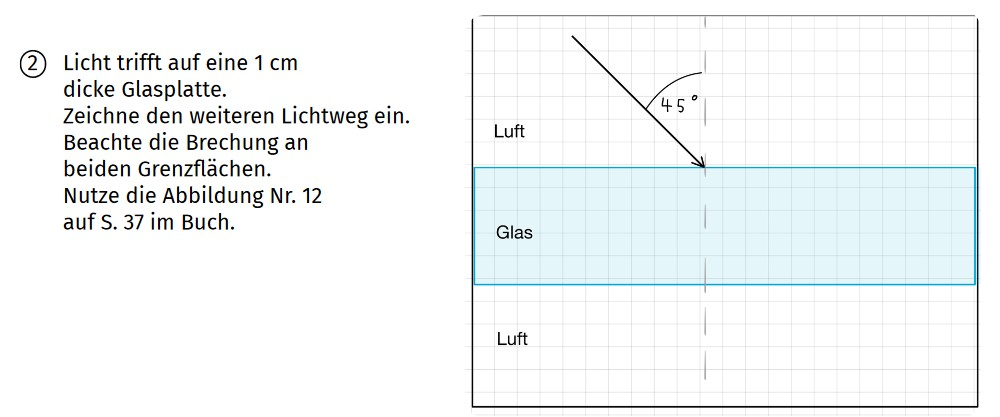
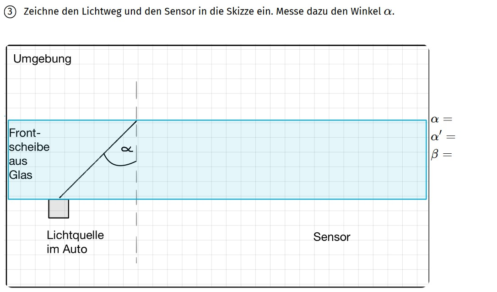
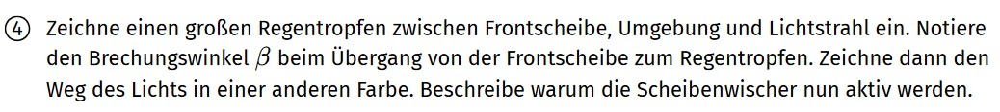

Wähle eine Aufgabe aus und drücke auf den Knopf "Nächster Hinweis". Überlege erst bevor du dir einen weiteren Hinweis anschaust.
Aufgabe 2

Hinweis 1:
Gehe in mehreren Schritten vor. Zeichne zuerst den Übergang von Luft nach Glas ein.
Hinweis 2: Beim Übergang Luft → Glas wird der Lichtstrahl zum Lot hin gebrochen. Wie groß ist der Brechungswinkel \(\beta\)?
Hinweis 3: Nutze das Brechungsdiagramm auf Seite 37 um den Brechungswinkel zu bestimmen.
Hinweis 4: Zeichne das Lot ein und messe den Winkel beim Übergang Glas → Luft.
Hinweis 5: Bestimme den Brechungswinkel \(\beta\) beim Übergang Glas → Luft.
Aufgabe 3

Hinweis 1: Messe den Winkel \(\alpha\). Die Umgebung ist die Luft. Kommt es zur Totalreflexion?
Hinweis 2: Ab welchem Grenzwinkel kommt es beim Übergang Glas → Luft zur Totalreflexion? Nutze das Brechungsdiagramm auf S. 37
Hinweis 3: Das Licht wird mehrfach total reflektiert bevor es auf den Sensor trifft. Hierbei gilt das Reflexionsgesetz. Wie groß ist dann der Reflexionswinkel \(\alpha'\) ?
Hinweis 4: Zeichne den Sensor ein. Genau wie die Lichtquelle ist er direkt an der Frontscheibe platziert.
Aufgabe 4

Hinweis 1: Der Regentropfen kann an mehreren Stellen eingezeichnet werden. Er darf sehr groß sein.
Hinweis 2: Was hat sich verändert? Handelt es sich noch um einen Übergang Glas → Luft
Hinweis 3: Durch den Regentropfen kommt es zu einem Übergang Glas → Wasser. Gibt es immer noch Totalreflexion?
Hinweis 4: Beim Übergang Glas → Wasser wird das Licht gebrochen. Bestimme den Brechungswinkel \(\beta\) im Diagramm auf S. 37
Hinweis 5: Die Scheibenwischer werden aktiviert, wenn der Sensor kein Licht mehr detektiert.